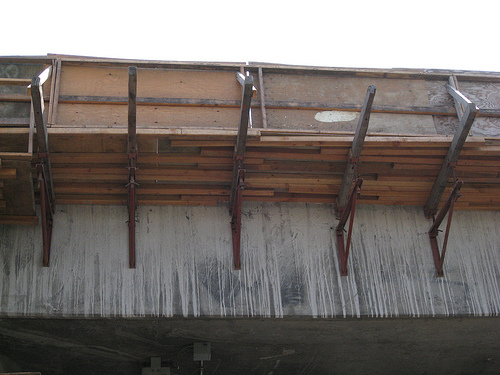

Tratamiento y recuperación de materiales
El estado de deterioro de un edificios localizado en las cercanías al centro histórico en Regina # 27 pertenece, junto con otras 13 casas que están en renta, a los hermanos Camilos o de la Buena Muerte. El deterioro del inmueble o edificio es principalmente a causa de una exposición prolongada a la intemperie o descubierto. El ambiente durante 25 años de abandono estropearon las diversas estructuras y elementos del edificio. Hasta perdió casi en su totalidad las cubiertas y entrepisos [de la planta alta al entresuelo]. Esto causó también la pérdida de las paredes acabadas con cal y una destrucción de la mampostería o construcción de tezontle. El tezontle es una piedra volcánica de color rojizo que se usa en la construcción.
Las paredes expuestas al ambiente se perdieron casi totalmente. Por ejemplo en la planta baja se redujo su presencia a algunos cuartos que anteriormente se utilizaban como accesorias, es decir como habitaciones que tienen entrada distinta y uso separado del resto del edificio principal. El piso existente, presenta exfoliaciones, desprendimientos en las bases y un recubrimiento esmalte sobre la pared como agregado por adecuación. Un detalle único es que en uno de los cuartos se encontró una serie de trazos o motivos vegetales los cuales enmarcan el hueco de la puerta que da salida al segundo cuarto de la accesoria. En el segundo cuarto se harán calas para así descubrir posiblemente que en los otros muros o paredes restantes habrá que hacerse la consolidación y restitución.
Muros: Aplanados y Secciones
Particularidades
Este inmueble está falta de cubiertas que es la principal causa de que se hayan desarrollado deterioros por intemperie ya que la intemperie introdujo numerosas filtraciones y humedades en muros causando la pérdida total de las paredes de cal en los interiores [por ejemplo en las fachadas interiores y en los interiores de la planta alta y entresuelo]. Al no haber hiladas de protección en los muros la disgregación y desprendimientos afectaron algunas secciones superiores y también afectaron muros de mampostería de tezontle y cal con la erosión de las juntas o espacios que quedan entre las superficies de las piedras o ladrillos. A todo este daño se suman los movimientos por sismo y el desarrollo de vegetación parásita. 
Propuesta de acciones de restauración
En el proceso de restauración lo relacionado con la consolidación del sustrato hay que hacerlo en superficie limpia y receptora, así como con características que permitan la adherencia y sustento.
Conceptos Generales
Donde haya pérdida de sección se usará la consolidación y restitución de muros usando un material que sea de igual calidad y que tenga las mismas características del material que se tiene que restituir.
Los pasos a seguir serán: liberación, limpieza, consolidación y restitución de aplanado de cal-arena adicionado con adhesivo de latex y finalmente un hidrofugante.
Consolidaciones
- Consolidación de muros afectados por grietas: Se retirara el material suelto que esté presente a lo largo de la grieta usando una limpieza a base de inyección de aire, integrando embutido a cada 30 cm un tubo plástico de ¾ ̎ con saliente de 20 cm, por donde se podrá inyectar, empezando por la parte baja, una mezcla de cal-arena-cemento y agua.
- Consolidación de juntas en muros de mampostería de tezontle. Para el rejunteo en muros de tezontle se limpiarán los restos flojos de mezcla con un gancho de alambrón o alambre, procediendo a lavar la junta y rejuntar a base de una mezcla de cal arena 1:3 usando cuchara de entallar y oprimiendo fuertemente la mezcla con un rayador de hule; para la restitución posterior del aplanado.
Restituciones
Restitución de muros debido a un derrumbe o mutilación. Se procederá a retirar los materiales diseminados de tezontle o los agregados de tabique. Se limpiará la zona de restos para llevar a cabo la restitución del muro, se cerrará el vano con material de recuperación o nuevo, mamposteando el tezontle con mezcla de cal-arena 1:3 hasta los niveles indicados en el proyecto.
Liberación
La liberación de la pared cal-arena se hará con cuchara de albañil y cincel bien afilado para destruir lo menos posible el mamposteo de tezontle. Nunca deberá limpiarse la piedra con cepillos metálicos, ya que sirve el riesgo de perder elementos del mamposteo.
Reintegración 
Se reintegraran las paredes en acabado fino con mezcla cal-arena 1:3 adicionada con sikalatex como adhesivo con el siguiente procedimiento:
Apagado de cal
Para lograr un eficiente apagado de la cal de piedra es necesario construir artesas de tabique o muro, que no son más que piletas con tres compartimientos de 1.50 X 1.00 X 1.00 de profundidad y reforzadas en sus esquinas con castillo de concreto armado. Es conveniente el uso de plantilla de concreto pobre en el fondo y un arreglado fino en los interiores para un mejor manejo del material.